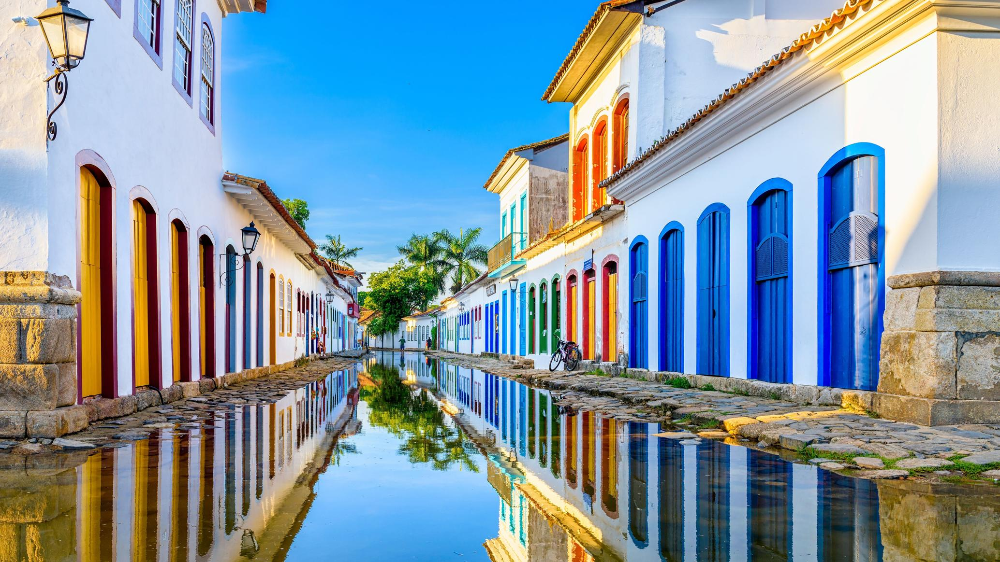
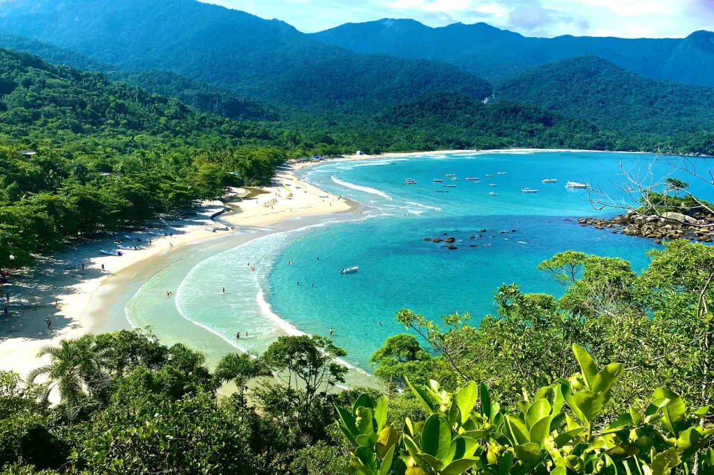
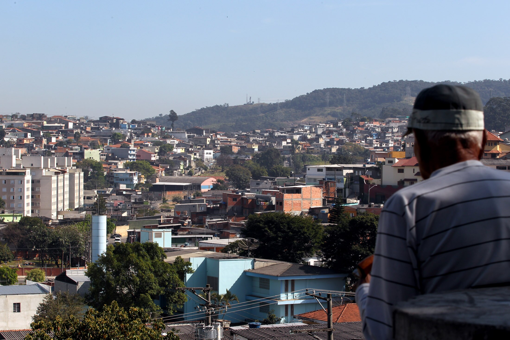
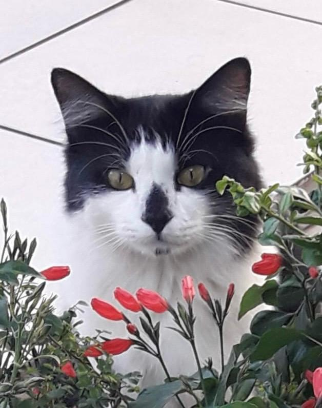
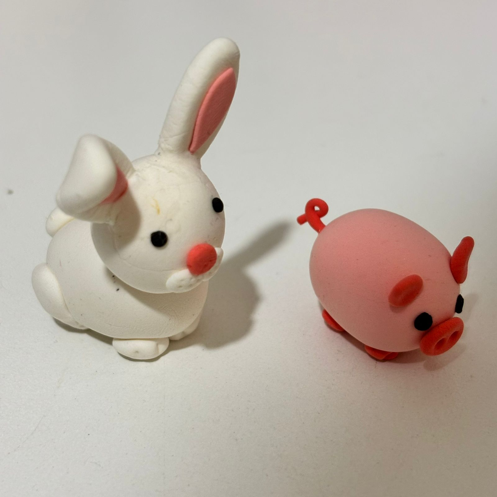
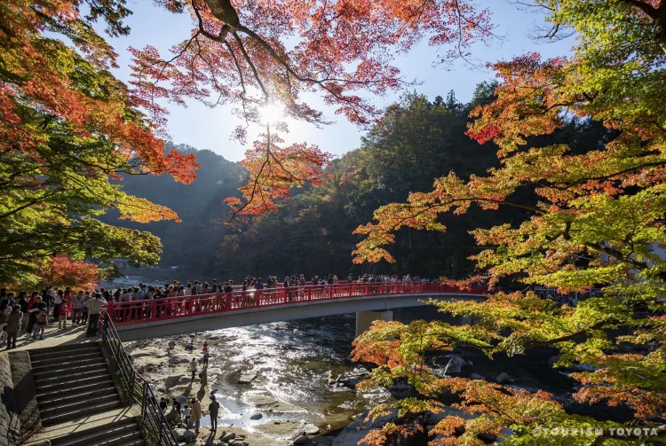
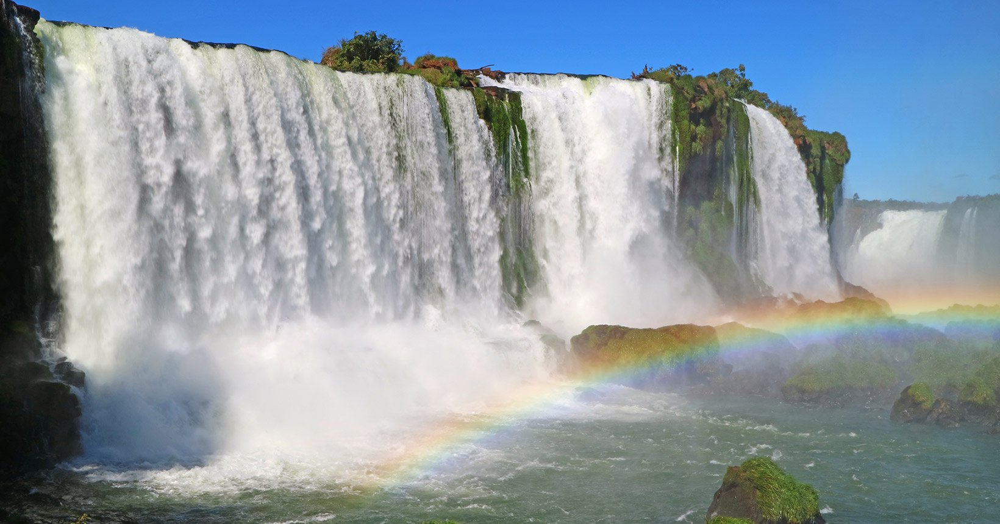

ㅤ

Nome: Yasmin Nakamura
Data de nascimento: 07/07/2010
Idade: 15 anos
Pirituba

Germinare BusinessㅤㅤㅤㅤㅤㅤㅤㅤㅤㅤㅤㅤㅤㅤㅤColégio Miranda


Sou uma mente artística. Adoro desenhar e criar miniaturas com biscuit.
Um exemplo de uma pintura que fiz... Esse é meu antigo gato Tito.
InspiraçãoㅤㅤㅤㅤㅤㅤㅤㅤㅤㅤㅤㅤㅤPintura


Aqui algumas miniaturas que eu fiz...



Estou aprendendo a tocar violino, comecei em fevereiro.

Tenho duas gatas fêmeas hoje. Elas tem 8 anos.

Moro do lado da antiga casa da Marquesa de Santos.




